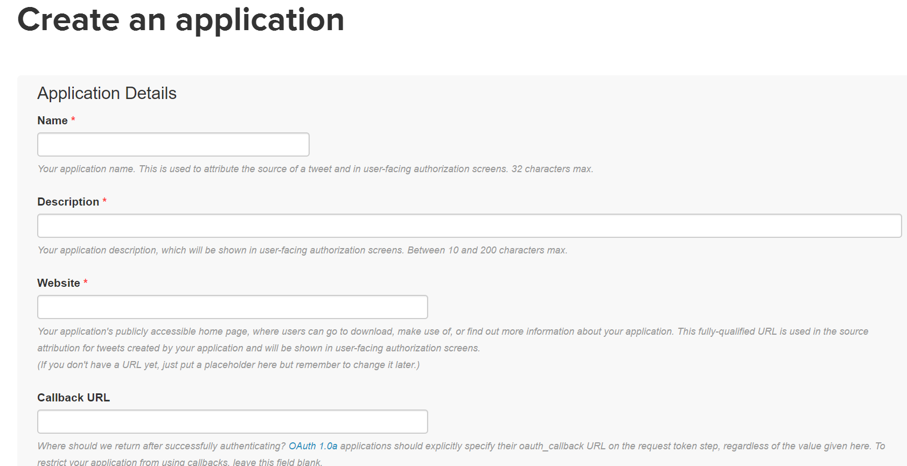
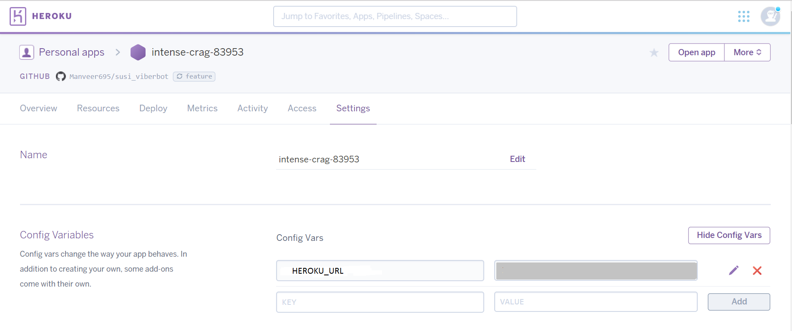

Table Of Contents
- susi_tweetbot
- How to chat with Susi AI bot on Twitter
- Getting Started : Twitter Susi AI Bot Installation
Related Topics
This Page
susi_tweetbot¶

How to chat with Susi AI bot on Twitter¶
Visit your twitter account and tweet to @SusiAI1 with your query and enjoy a tweet back from the Susi AI bot account!
Also, you can enjoy personal chatting with Susi. Follow the SUSI AI account on twitter here and have a personal chat with it.

Getting Started : Twitter Susi AI Bot Installation¶
We will make a Susi messenger bot account on Twitter. This account will tweet back when it’s name is mentioned in a tweet. Also, 1-on-1 auto chat will be inculcated to our account.
Make a new account, which you want to use as the bot account. You can make one from here.
Setup your own Messenger Bot¶
- Fork this repository.
- Make a new app here, to know the access token and other properties for our application. These properties will help us communicate with Twitter. 
Click “modify the app permissions” link, as shown here:

Select the Read, Write and Access direct messages option:

Don’t forget to click the update settings button at the bottom.
Click the Generate My Access Token and Token Secret button.
- Create a new heroku app here.
This app will accept the requests from Twitter and Susi api.

Create a config variable by switching to settings page of your app.
The name of your first config variable should be HEROKU_URL and its value is the url address of the heroku app created by you. 
The other config variables that need to be created will be these:

The corresponding names of these variables in the same order are:
- Access token
- Access token secret
- Consumer key
- Consumer secret
We need to visit our app from here, the keys and access tokens tab will help us with the values of these variables.
Connect the heroku app to the forked repository.
Connect the app to Github by selecting the name of this forked repository.

- Deploy on development branch. If you intend to contribute, it is recommended to Enable Automatic Deploys.
Branch Deployment.

Successful Deployment.

- Visit your own personal account and tweet to this new bot account with your query and enjoy a tweet back from the bot account!
- Also, you can enjoy personal chatting with Susi.
Feel free to play around with the already made SUSI AI account on twitter here. Follow it, to have a personal chat with it.